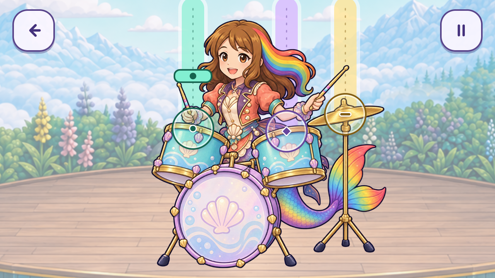
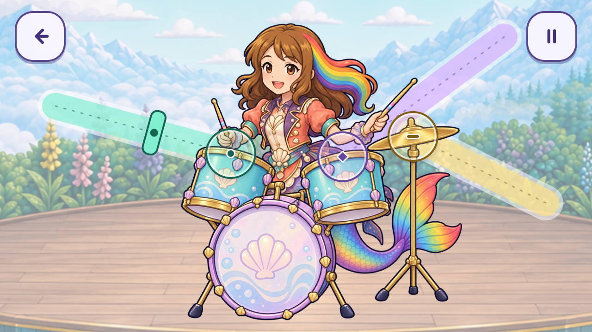
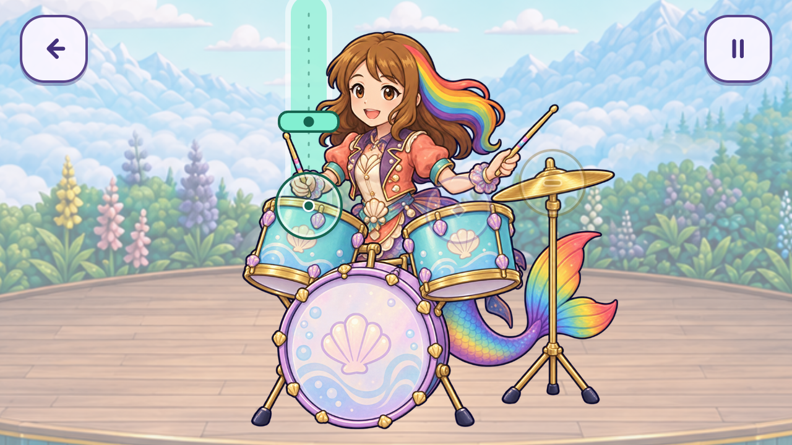
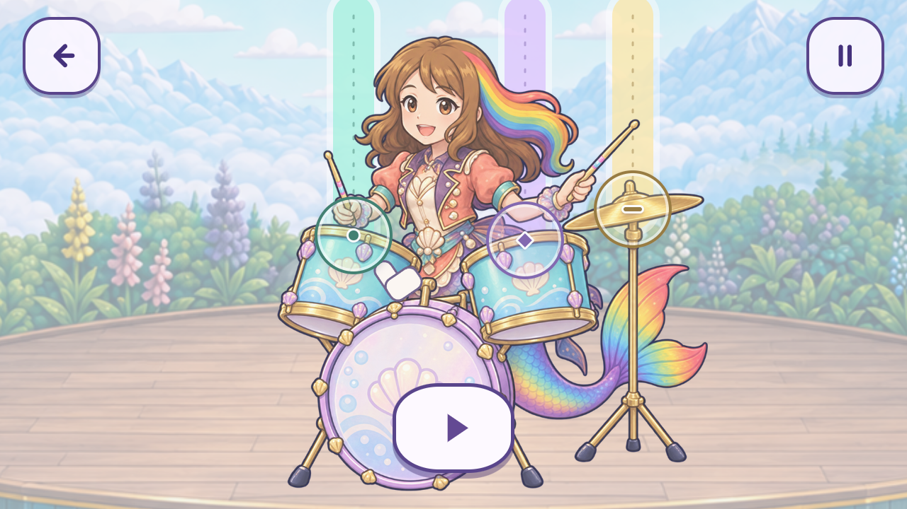
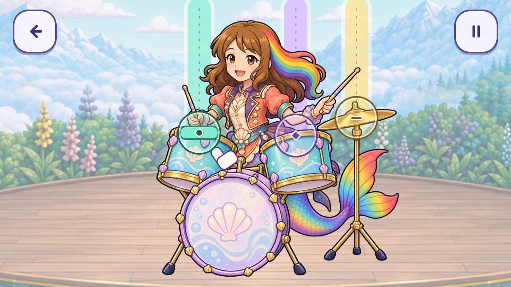
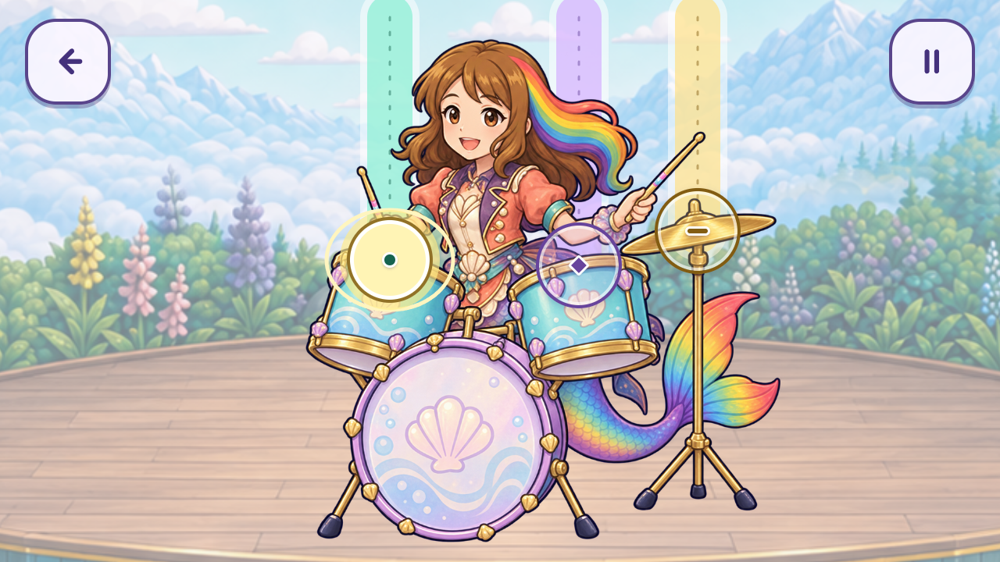
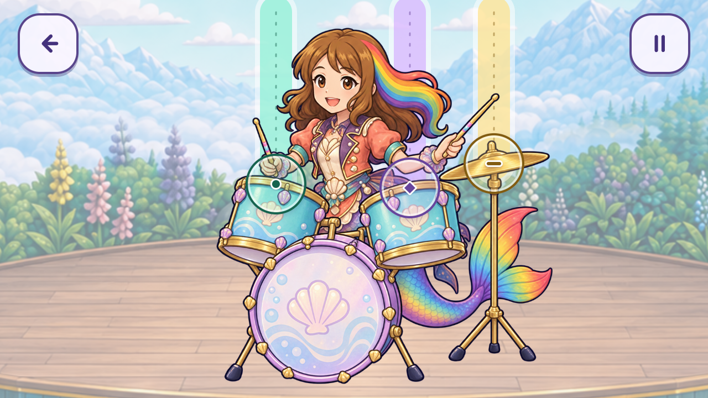
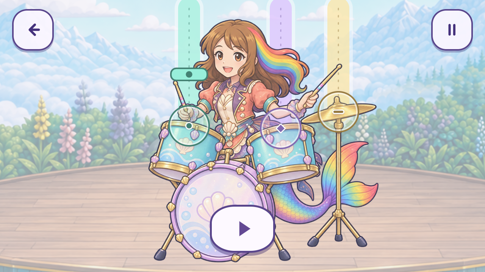

01 · Falling ribbons
Direct vertical travel. Clearest starting point for the Guitar Hero-style request.
A bar travels toward a marked drum rim or cymbal. A deliberate tap as it arrives produces local contact feedback. These are editable browser interface studies and captured UI states, never film-generation pixels or accepted animation frames.
Try the three interfaces · Codex design brief · Machine evidence

Direct vertical travel. Clearest starting point for the Guitar Hero-style request.

Tracks enter from the sides, preserving a clear view of Roshan’s face. Needs child testing for the changing directions.

Only the next path stays bright. Same timing action, less competing information.

A still hand pointer identifies the drum. Large play, Back and pause controls remain readable. Final game also needs the exact recorded objective voice; this silent fixture does not satisfy that gate.

Shape and colour repeat on the bar and instrument. The fixture gives 3.2 seconds of travel and one cue at a time. No chord or finger hold is required.

The bar centre reaches the actual instrument target. An intentional touch inside ±350 ms registers. Early, late and wrong-drum touches cannot accumulate progress.

A short warm ring confirms the valid touch at the instrument. Roshan’s pose stays static in this interface pass. Real stick contact/rebound is a later artwork and implementation seam.

No red mark, lost prize, threatening countdown or failure screen. The next practice cue arrives. Zero input grants no hit, success or reward.

Focus loss freezes time and cancels held input. Resume restores at least 1.6 seconds of approach. Back stays available above the pause veil.